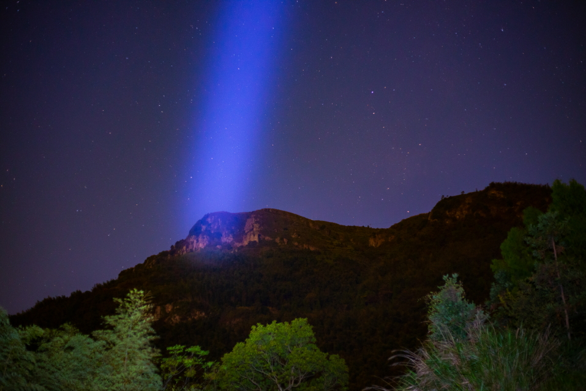

第五百二十四章 没玩就坏的精灵
“炎龙哟！受死吧！”
精灵向着炎龙一跃而起，风缠绕在月姬的足下，让她能够跳得更高，她高举着低级魔法剑对着炎龙砍下去，剑身上微风缠绕，虽然是微不足道的风，但却蕴含着能够撕裂钢铁的力量。
“吼——”
注意到精灵的接近，炎龙突然将脸扬起对着她发出一声咆哮，喉间微微泛着红光酝酿着近乎魔法技能的火焰。
“呀——”
本来还气势汹汹的精灵突然松开了手缩了起来，同时发出了恐惧的叫声，风在这一刻失控，失去了风的支撑，精灵从空中掉了下来，同时也避开了炎龙喉咙间吐出的火焰。
“不可能的！不可能的！战胜炎龙什么的，绝对不可能的！” 精灵缩在地上抱着脑袋绝望的喊道。
虽然全身心的放松仍由月姬控制，但是面对炎龙的血盆大口，杜嘉还是不可抑制的感受到了恐惧，并且本能的夺回了身体的控制权瑟瑟发抖。
“没什么不可能的！”月姬出现在杜嘉的面前严厉的看着杜嘉，“看看炎龙的眼睛！看看炎龙的爪子！”瞎掉的左眼以及失去的左臂似乎诉说着炎龙的衰弱似得。
“炎龙也只是血肉之躯而已。”月姬平静的说道，她蹲了下来与杜嘉平视，她注视着精灵碧色的双眸，那眼瞳里并没有自己的倒影，只有肆虐的炎龙的影子：“你虽然弱小，但是我很强！所以，什么都不要想，什么都不想要看，只要顺着我给你的感觉做就可以了！”
“顺着感觉……”
“就像是刚刚开始的那种感觉一样！”月姬说道。
杜嘉和身体空虚没有精神的伊藤不一样，她可没办法强行介入杜嘉的身体进行操控，只能在精神上和杜嘉进行了微弱的同步，然后向她传达如何动起来的感觉，所有的操控还是需要由杜嘉协助才能完成，这和玩游戏操作角色差不多，只不过专注度更加的高罢了。
“感觉……感觉……”
面前的月姬慢慢的淡去，杜嘉努力的回想着刚刚的感觉，面前肆虐的炎龙不断地吸引她的注意力，像是逃避似得，杜嘉愈发的去努力感受刚刚的感觉，她的脖子上的神经连结装置的绿灯不断地闪烁着，但是杜嘉却始终无法进入状态。
“没救了，还是执行B计划吧！”被蕾莱扶着的月姬张开眼睛叹了口气，本来看杜嘉醒来了还想用杜嘉的身体和炎龙干一架，但是杜嘉真的是不争气。
“B计划？”蕾莱发出疑惑的声音。
“A计划是和炎龙交涉，约束炎龙，不过被黑精灵破坏了，C计划是用杜嘉的身体和炎龙战斗，不过杜嘉比我想象的没用，而B计划……”月姬站了起来拍了拍裙子上的尘土，“当然是战略性撤退咯。”
“可是……”蕾莱看了看月姬再看了看战场那边，这不是能撤退的样子，黑精灵还有伊丹她们还在战斗，杜嘉也因为月姬的关系被亲自送往了战场中心，根本走不了。
“……呼——”月姬瞄了眼战场，然后有些不快的吐了口气，“真不想管这些找死的家伙！”虽然这样说着，但是，月姬却双手置于胸前做圆，“土之破、水与光诗吟唱，贰伍——花轮转！”
月姬如歌似得吟唱，淡淡的光晕在炎龙的周身浮现，一枝巨大的白花从炎龙脚下的地里长了出来，在白花长出来的同时，月姬掌心相对两手用力的一拍，看上去有些可爱的白花活了似得打开花苞将炎龙整个包了起来。
虽然不能使用魔法，但是月姬能动用的手段却不止一种，这就是月姬作为一个博学者的优势，比起依靠数码核心施展那种只能忽悠人的障眼法，精灵百句歌在这个时候更加有用。
在特地的这段时间里，月姬所吸收的魔力全数的用于修复身体，即转换为生命力，她的体内并没有能够让她使用术式的魔力，强行压榨生命力甚至会给身体造成二次损伤，但精灵百句歌不同，虽然念完后力量强到没朋友，但是最初的那几十句对力量的消耗并不大，更看重与精神与自然的调频，所以即使空魔的月姬，也还是能念上几句的，不过，到底是没有魔力的支持，效果有限……
“趁现在！”一个黑精灵见状，虽然不知道发生了什么，但还是大声的向同伴发出信号，同时弯下腰去捡已经牺牲的同伴留下的LAM。
一颗小石子砸在黑精灵的后脑勺上，同时一个声音远远地传来：“不要恋战，快撤！”
月姬强忍着爆粗口的冲动冷冷地看着似乎想要继续打的黑精灵，她的双手合掌，看上去很吃力的样子，同时远处被巨大的白花吃下去的炎龙也在剧烈的挣扎这，不时的有红光从花瓣上倒映出来。
“蕾莱，去看看伊丹死了没有，没有就带走，我撑不了多久！！！”月姬用力的按着手心，看向身边的蕾莱说道。
虽然是军人，但到底还是人类，虽然能轻易撂倒那些黑精灵，但是，伊丹的体质，其实是除了蕾莱之外在场所有人里最差的，刚刚月姬看到伊丹被炎龙从岩壁上轰下来的碎石块埋了……
“明白！”蕾莱点了点头，抱着法杖跑了出去，她先跑向愣愣的看着束缚炎龙花苞的杜嘉，无论是让杜嘉不要碍手碍脚的，还是让她搭把手帮个忙，这都是优先选项。
“15！”月姬突然出声喊道，突然发出的声音让蕾莱楞了一下，“14！……”紧随其后的报数让蕾莱瞬间明白月姬的意思，这是束缚炎龙的倒计时，时间一到，炎龙就会脱离束缚，这不由的催促着蕾莱加快行动。
虽然没有得到月姬的指示，但是精于计算的黑精灵的典范——姚却马上明白了月姬的意思，开始阻止打红了眼想要继续攻击炎龙的同伴。
但，时间并不是那么的充裕……
“发生了什么？”
被蕾莱和杜嘉从碎石堆里挖出来的伊丹看着巨大的花苞疑惑的问道，虽然被碎石掩埋，但是伊丹身上除了些许擦伤，并没有什么其他的伤痕。
花苞正在绽放……
“3！……”
“没时间了，快走！”伊丹的无碍让蕾莱的眼中闪过一丝的诧异，不过现在不是探究这种事的时候，她的法杖在伊丹的身上点了一下，让伊丹变成了无重力的状态，然后二话不说的和杜嘉一起往出口的岩洞跑去。
“1！”
月姬的倒计时结束的同时，巨大的花苞猛然绽放，被封闭在花苞里的火焰从中炸裂。
【
】
【嗯，俗务繁忙……昨晚去参加升仙大会了（滑稽）】
【我改主意了，炎龙留给战斗机吧】